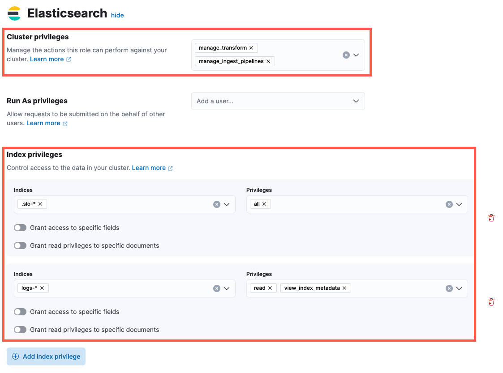

Configure service-level objective (SLO) accessedit
To create and manage SLOs, you need an appropriate license.
You can create the following roles for your SLOs:
To create a role:
- From the left navigation in Kibana, under Management select Stack Management.
- Under Security, select Roles.
- Click Create role in the upper-right corner of the page.
Create an SLO All roleedit
Set the following privileges for the SLO All role:
-
Under Cluster privileges in the Elasticsearch section, add
manage_transform. -
Under Index privileges, add
.slo-*to the Indices field andallto the Privileges field. - Click Add index privilege
-
Add indices you plan to create SLOs for to the Indices field, and add read and view_index_metadata to to the Privileges field.
 - In the Kibana section, click Add Kibana privilege.
- From the Spaces dropdown, either select any specific spaces you want the role to apply to, or select All Spaces.
-
Set Observability → SLOs to
All.
Create an SLO Read roleedit
Set the following privileges for the SLO Read role:
-
Under Index privileges in the Elasticsearch section, add
.slo-*to the Indices field andreadto the Privileges field.
- In the Kibana section, click Add Kibana privilege.
- From the Spaces dropdown, either select any specific spaces you want the role to apply to, or select All Spaces.
-
Set Observability → SLOs to
Read.